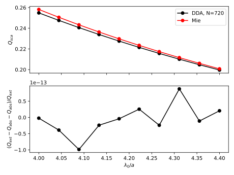

Total and Differential Scattering Cross Sections of a Polystyrene Sphere
This example aims to teach the user how to use CEMD.jl in only electric mode. For this we will compute the total and differential scattering cross section of a polystyrene (PS) sphere with a radius of 500nm in water. We will then compare it with Mie theory.
Be careful: using the electric DDA for solving this type of problems is not optimal at all (way to slow and not accurate). The sizes and refractive indices used in this example make the problem converge reasonably well (see last section) and is then a nice figure of merit for this software. If you need to solve the light scattering problem of a sphere, it is better to use directly Mie theory.
If you don't now what a DDA problem is, please first have a look to the theory part.
If you want to run this example, copy it or download it on the github (example_PS_sphere.jl) and run it using
julia example_PS_sphere.jl
If you can, it is recommanded to run it in parallel, using the --threads option.
Let's start by importing CoupledElectricMagneticDipoles.jl. Note that we also use LaTeXStrings and PyCall, because we will use the python matplotlib library in order to plot the results. LinearAlgebra and Lebedev are used to perform integrals on the surface of a sphere (Lebedev.jl).
#imports
using CoupledElectricMagneticDipoles
using PyCall
using LaTeXStrings
using Lebedev
using LinearAlgebra
@pyimport matplotlib.pyplot as plt
Discretizing the Sphere
We then need to start modelizing our particle in water. For, this we start by defining the parameters of the simulation. PS has a refractive index of 1.59 (we consider no absorption, so no imaginary part). For water, it is 1.33. We can then set the dielectric constant of the particle eps and of the medium eps_h using $\epsilon=n^2$.
##################### Parameters ########################################
#radius (in nm)
a=250
#dielectric constant of the particle
eps=(1.59)^2
#dielectric constant of the medium
eps_h=(1.33)^2
#number of wavelengths to compute (in nm)
N_lambda=10
lambda_min=1000
lambda_max=1100
#wavelengths to compute
lambdas0=LinRange(lambda_min,lambda_max,N_lambda)
lambdas=lambdas0/sqrt(eps_h)
##########################################################################lambdas0 are the wavelength for which we want to compute the scattering cross section (here between 1000 and 1100nm). We directly computes the wavelength in medium by dividing by the refractive index. Note that we always use the wavenumber in the medium in the software.
We can then discretize the sphere in small cubes using Geometries.discretize_sphere. The first parameter is the radius of the sphere and the second is the number of cubes to place in the diameter of the sphere (it will set the total number of cubes of the discretized sphere).
#discretizes a sphere in small cubes
latt,dx=Geometries.discretize_sphere(a,10)If N is the number of cubes in the discretized sphere, this function returns a Nx4 array latt, that contains the coordinates of the center of each cube, as well as its filling fraction (If the cube is in the bulk, the filling fractions is 1. If it is on the surface, the filling fraction can be smaller than 1, depending on volume fraction of the sphere really inside the sphere.). It also returns dx, which is the length of the edges of all the cubes.
Here for instance, the number of cubes in the discretized sphere is N=720.
Computing the Polarizabilities
Now that the sphere is discretized, we need to assign to every cube a polarizability. This polarizability is wavelength dependant and then we nee to create an array to store teh results of the cross section cslculations for each wavelength. For this, we use:
#getting number of cubes in the discretized sphere
n=length(latt[:,1])
#create an array to store results
res=zeros(Float64,N_lambda,3)We can then open a loop and computes the polarizability of each cube as follows:
#solves DDA problem for each wavelength
for i=1:N_lambda
#wavenumber in medium
knorm=2*pi/lambdas[i]
#computes polarizability for each dipoles using effective dielectric constant
alpha=zeros(ComplexF64,n,3,3)
for j=1:n
eps_eff=latt[j,4]*eps+(1-latt[j,4])*eps_h
alpha[j,:,:]=Alphas.alpha_radiative(Alphas.alpha0_parallelepiped(dx,dx,dx,eps_eff,eps_h),knorm)
endHere, we first compute the wavenumber in the medium and then, using the second loop, assign a polarizability to each cube. Alphas.alpha0_parallelepiped computes the quasistatic polarizability tensor (a 3x3 complex matrix with units of volume) of a cube. Here, we use eps_eff, which is the filling fraction-ponderated mean between the dielectric constant inside and outside the medium. Then, we need to apply the radiative correction to the polarizability using Alphas.alpha_radiative. This last function also renormalize the polarizability from units of volume to no dimensions. We need this because the functions to solve the DDA problem require dimensionless inputs (see the home page and the theory part for more information!).
Solving the DDA Problem and Computing the Total Scattering Cross Sections
Before solving the DDA, problem, we need to choose an input field. We will take a x-polarized plane wave propagating along the positive z axis. For this, we use inputFields.plane_wave_e. This functions takes the dimensionless positions kr of the center of the cubes (i.e. the wavenumber times the coordinates array) and outputs a Nx3 array that represent the input field on each of the dipoles.
#computes input_field, an x-polarized plane-wave propagating along z
input_field=InputFields.plane_wave_e(knorm*latt[:,1:3])We can now solve the DDA problem between all the dipoles using DDACore.solve_DDA_e:
#solves DDA
e_inc=DDACore.solve_DDA_e(knorm*latt[:,1:3],alpha,input_field=input_field,solver="CPU")The solver is set to "CPU", that means that the system of linear equations is going to be solved using the CPU and LAPACK, called from julia. This outputs a Nx3 complex array containing the incident field on each dipole. This incident field can the be used to compute the extinction, absorption and scattering total cross sections ($\sigma_{ext},\ \sigma_{abs},\ \sigma_{sca}$) by calling PostProcessing.compute_cross_sections_e.
#computes cross section and save it in folder
res[i,1:end]=PostProcessing.compute_cross_sections_e(knorm,knorm*latt[:,1:3],e_inc,alpha,input_field;explicit_scattering=true,verbose=true)
endThis function is just returning $\sigma_{ext},\ \sigma_{abs},\ \sigma_{sca}$ in a float array. This results is directly saved in res, that we created before.
It is now possible to plot the normalized scattering cross section ($Q_{sca}=\sigma_{sca}/\pi a^2$) as a function of the vacuum wavelength divided by the radius $\lambda_0 /a$. To check that the result we obtain is correct, we compare with Mie theory (using the MieCoeff module). We also plot the error $(Q_{ext}-Q_{abs}-Q_{abs})/Q_{ext}$ to check tha t the optical theorem, i.e. $\sigma_{ext}=\sigma_{abs}+sigma_{sca}$ is well fulfilled. The plot is made using the python library matplotlib called in julia by the intermediate of the PyCall library, but you can plot it with any software of your choice.
#scattering cross section from the Mie theory
res_mie=MieCoeff.mie_scattering.(2 .*pi./lambdas*a,eps,eps_h;cutoff=50)
#plotting the cross sections using matplotlib
fig1,ax1=plt.subplots(2,sharex=true)
#sets axis labels
ax1[1].set_ylabel(L"Q_{sca}")
ax1[2].set_ylabel(L"(Q_{ext}-Q_{abs}-Q_{abs})/Q_{ext}")
ax1[2].set_xlabel(L"\lambda_0/a")
#plot
cst=pi*a^2
ax1[1].plot(lambdas0./a,res[:,3]./cst,color="black",label="DDA, N="*string(n),marker="o")
ax1[1].plot(lambdas0./a,res_mie,color="red",label="Mie",marker="o")
ax1[2].plot(lambdas0./a,(res[:,1].-res[:,2].-res[:,3])./res[:,1],color="black",marker="o")
#legend and save
ax1[1].legend()
plt.tight_layout()
fig1.savefig("Q_sca.svg")This is what we get:
We see that the DDA cross section is not exactly the same that the Mie one and that the energy is correctly conserved.. For more information, a small convergence study is shown in the last section of this example (without code).
Computing the Differential Scattering Cross Sections
In this part of the example, we want to compute the differential scattering cross section in the y-z plane of the same sphere (we fix here the wavelength to be lambdas[1], i.e. 1000nm in vacuum). To start, we just solve the DDA problem and computes cross sections as we did previously.
#computes polarizability for each dipoles using effective dielectric constant
knorm=2*pi/lambdas[1]
alpha=zeros(ComplexF64,n,3,3)
for j=1:n
eps_eff=latt[j,4]*eps+(1-latt[j,4])*eps_h
global alpha[j,:,:]=Alphas.alpha_radiative(Alphas.alpha0_parallelepiped(dx,dx,dx,eps_eff,eps_h),knorm)
end
#computes input_field, an x-polarized plane-wave propagating along z
input_field=InputFields.plane_wave_e(knorm*latt[:,1:3])
#solves DDA
e_inc=DDACore.solve_DDA_e(knorm*latt[:,1:3],alpha,input_field=input_field,solver="CPU")
#computes cross section
cs=PostProcessing.compute_cross_sections_e(knorm,knorm*latt[:,1:3],e_inc,alpha,input_field;explicit_scattering=true,verbose=true)
Then, we define a array of angle thetas in order to generate a uniform sampling ur of the units vectors in the y-z plane.
#sampling direction an plotting
thetas=LinRange(0,2*pi,100)
ur=zeros(100,3)
ur[:,3]=cos.(thetas)
ur[:,2]=sin.(thetas)
using this array of directions, we can compute the differential cross section in all of these directions using PostProcessing.diff_scattering_cross_section_e. This takes the same positional arguments as PostProcessing.compute_cross_sections_e, but just adding the array of directions. It outputs an array containing the differential scattering cross section in all the directions contained in ur.
#computes differential cross section
res=PostProcessing.diff_scattering_cross_section_e(knorm,knorm*latt[:,1:3],e_inc,alpha,input_field,ur)We can plot it with a radial projection. This time again, we plot the normalized scattering cross section.
#plotting
fig2=plt.figure()
ax2 = fig2.add_subplot(projection="polar")
ax2.set_title(L"log(d Q_{sca}/ d \Omega)")
ax2.plot(thetas,log10.(res/pi/(a^2)),label="y-z plane")
plt.tight_layout()
fig2.savefig("diff_Q_sca.svg")
On this plot, the input wave is coming from the left side. We see that most of the light is forward scattered.
For a sanity check, we can try to integrate the differential scattering cross section on the unit sphere using Lebedev.jl and compare with the total scattering cross section.
#Compare total scattering cross section and integral of the differential one
x,y,z,w = lebedev_by_order(13)
csca_int=4 * pi * dot(w,PostProcessing.diff_scattering_cross_section_e(knorm,knorm*latt[:,1:3],e_inc,alpha,input_field,[x y z]))
println(cs[3]," : ",csca_int)It outputs
50042.00684959106 : 50042.00684909766
showing, that they are the same.
A Note on Convergence
As seen in the previous sections, the scattering cross section obtained with N=720 cubes/dipoles don't match perfectly with the mie solution (a bit more than 1%). But what happens if we change the number of cubes? We repeated the calculations of the total scattering cross section but with several number of dipoles (from 117 to 9549). Here are the results:

What we see is that the error starts to be way smaller for numbers of dipoles bigger than 2295. The example of the PS sphere works quite well, but be careful, this doesn't mean that it will converge like that for every types of spheres. If you want to do that with another sphere made of another material or another object, check the convergence!. Recall also that DDA is not the best method to solve light scattering problems by a sphere. If you don't really need it, prefer to use Mie Theory.